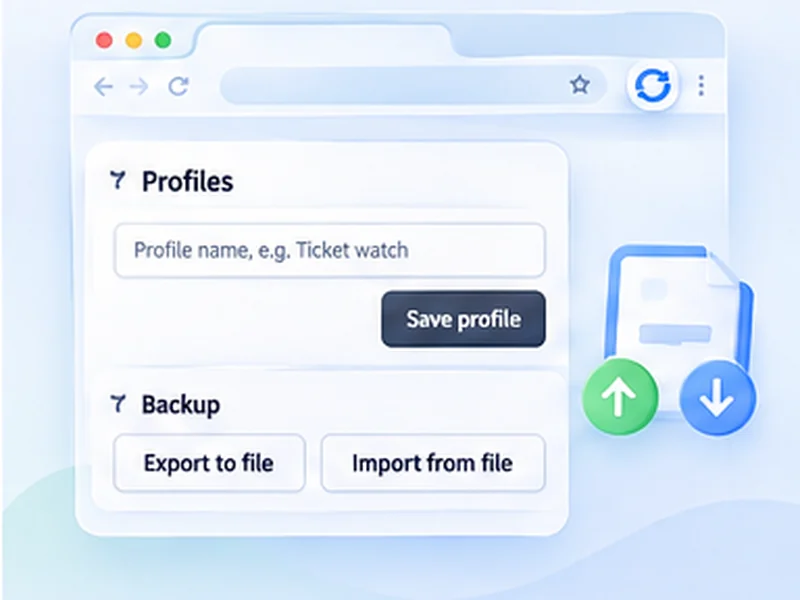

Save a set-up once. Reuse it anywhere.
Different pages need different settings. Save each setup under a name and switch between them from the popup.

How saved profiles works
Different pages need different settings. Save each setup under a name and switch between them from the popup.
Profiles and backups are stored locally. Nothing is uploaded, and there is no login.
Quick setup
Set the popup up the way you like.
Open All settings (the gear icon).
Type a name under Profiles and press Save profile.
Use Export to file under Backup to keep a copy.
Different pages, different refresh settings
A restock watch, a dashboard and a development preview need very different settings. Rather than re-entering them, save each as a named profile and switch from a menu at the top of the popup.
Pin the settings you use most
The popup keeps to the essentials. Everything else lives under Advanced, and any setting can be pinned to the main view with one click. If you always set a time limit or a watch rule, pin it and it is there every time.
Export and import
From the settings page you can export your settings, pins and profiles to a single file, and import that file in another browser or on another computer. It is also a simple backup before reinstalling.
No account, on purpose
Nothing is synced through a server, because the extension makes no network requests. The file is how you move things.
A worked example: three profiles
Set up a restock watch (30 to 60 seconds, Stop when text disappears, a two-hour limit) and save it as Restock. Change the form to a fixed 300 seconds with the page counter off and save it as Dashboard. Then three seconds with Hard reload on, saved as Dev. From then on, the Profile menu at the top of the popup loads any of them in one click.
What is saved, and what is not
- Saved in a profile: every setting, including the watch text.
- Saved separately: which settings are pinned, and your language.
- Remembered pages: with Remember this page switched on (Advanced settings, Start automatically), the page you start on is kept with its settings and starts again by itself when it is reopened, also after a browser restart. Press Stop to forget it.
Moving to a new computer
On the old machine, open All settings and choose Export to file. On the new one, install the extension, open All settings and choose Import from file. Settings and pins are replaced; profiles are merged.
At a glance
- Named profiles. Keep one for restock watching, another for a dashboard, another for development.
- One-click switch. A profile picker appears at the top of the popup once you have saved one.
- Take it with you. Export settings, pins and profiles to a file and import them on another browser or computer.
Questions, answered.
How do I save a profile?
Open All settings from the gear icon, type a name under Profiles and press Save profile.
How many profiles can I have?
Up to 50.
Do profiles sync between devices?
Not automatically. Export a file and import it on the other device.
Does importing overwrite my profiles?
Settings and pins are replaced. Profiles are merged, with imported ones winning if a name clashes.
Are profiles shared between Chrome and Firefox?
Yes, through export and import. The file works in both.
Do profiles sync between browsers?
Not automatically. Use export and import to move them.
Try it on your next open tab.
Free for Chrome and Firefox, with no account required.
Not seeing the feature you need?
Share the browser task you would like to make easier. Your idea helps guide what gets built next.